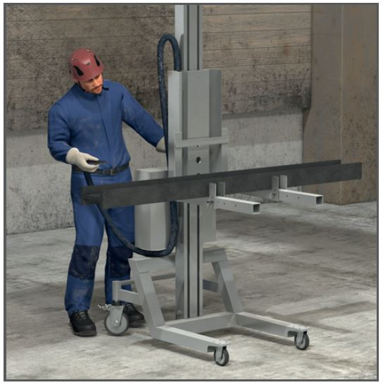
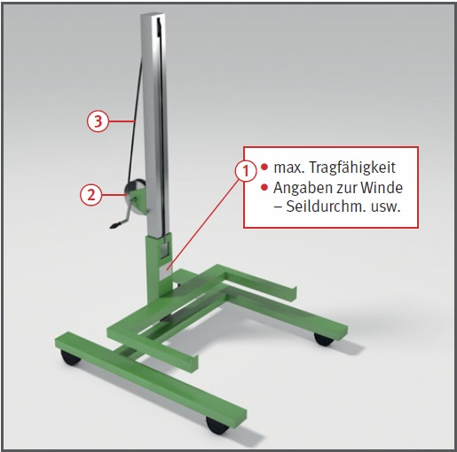

Gefährdungen
- Überlastungen der angehobenen Gabel kann zum Versagen der Tragkonstruktion führen.
- Das Verfahren auf geneigten
Flächen und das versehentliche
Hineinfahren in Vertiefungen
kann das Umstürzen des Hubwagens bewirken.

Schutzmaßnahmen
- Gerät wie in der Betriebsanleitung beschrieben verwenden.
- Gerät nicht überlasten,
maximale Tragfähigkeit beachten
 .
.
- Nur Winden mit selbsthemmendem Antrieb oder
Sperrklinken verwenden
 .
.
- Auf Seilbeschädigungen
achten und beschädigte Seile
erneuern
 .
.
- Gerät nicht auf geneigten
Flächen einsetzen. Vorsicht beim
Verfahren auf Flächen mit Vertiefungen.
- Material gegen Abrollen und
Kippen von der Gabel sichern.
- Last nur bei abgesenkter
Gabel verfahren.
- Nicht unter schwebender Last
hindurchgehen bzw. aufhalten.
Prüfungen
- Art, Umfang und Fristen erforderlicher Prüfungen festlegen (Gefährdungsbeurteilung) und einhalten.
- Ergebnisse der Prüfungen dokumentieren.
07/2021